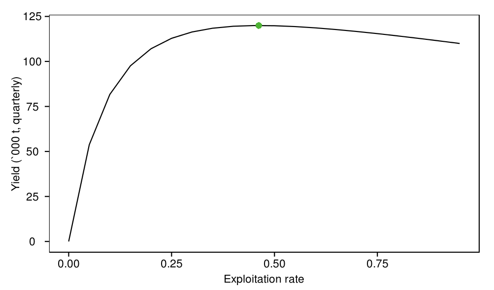
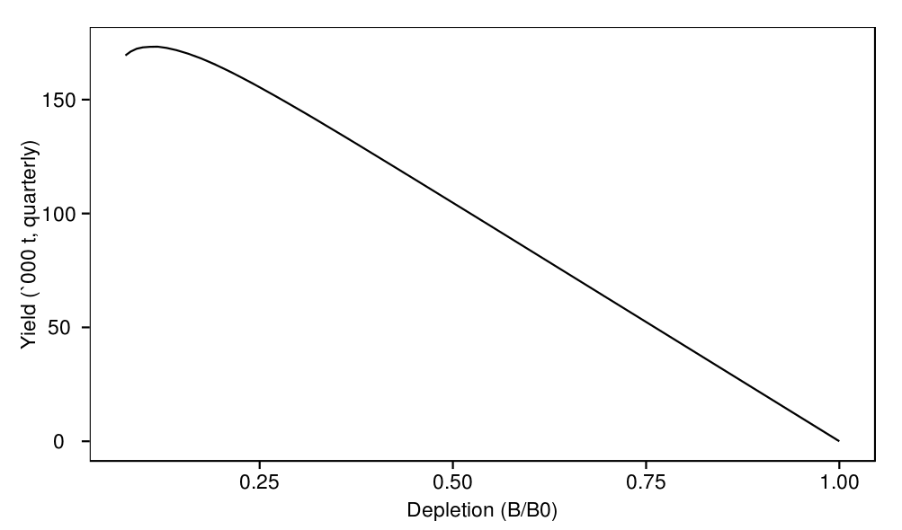
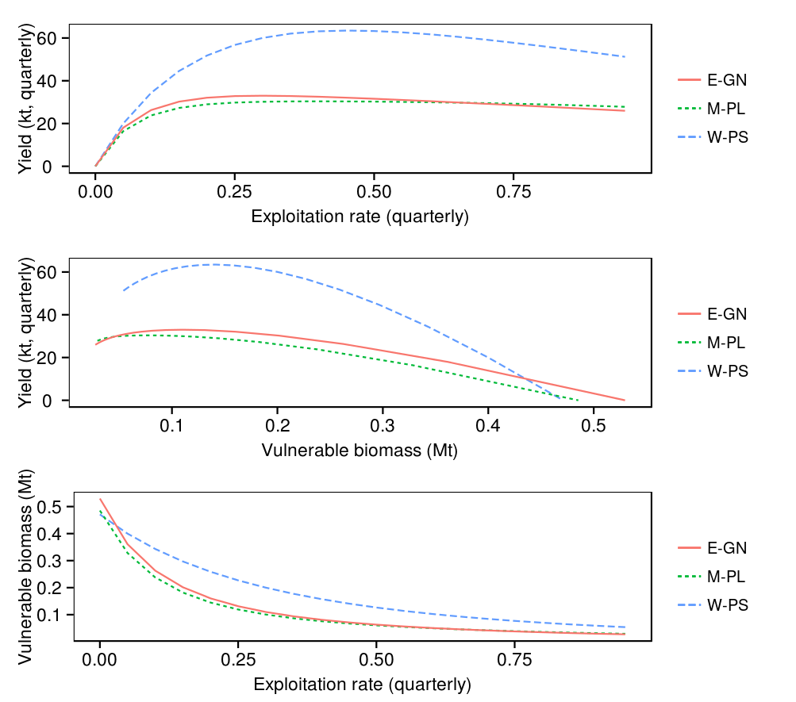

Indian Ocean skipjack model : yield curve and MSY
This document summarises output from the
yield
task which is primarily intended for checking MSY calculations and the shape of the yield curve. The shape of the yield curve is dependent on the model's parameters (in this case read in from
parameters/input/parameters.cila
) including selectivity parameters (shown below).
source('../../common.R',local=T)
load(c(
'curve','model'
),from='../output')
load(c(
'maturities','selectivities'
),from='../../model/output')
| Exploitation rate which produces MSY | 0.461809 | |
| Instantaneous rate of fishing mortality which produces MSY | 0.619541 | |
| Maximum sustainable yield (quarterly) | 116923 | |
| Total spawning biomass associated with maximum sustainable yield | 1587710 | |
| Number of iterations used to find MSY | 8 |
print( ggplot(curve,aes(x=exprate,y=yield/1000)) + geom_line() + geom_point(data=model,aes(x=e_msy,y=msy/1000),shape=16,size=3,colour=hsv(0.3,0.7,0.7)) + labs(x="Exploitation rate",y="Yield (`000 t, quarterly)") )
msy_find
method hich uses Brent's minimisation algorithm.
print( ggplot(curve,aes(x=depletion,y=yield/1000)) + geom_line() + labs(x="Depletion (B/B0)",y="Yield (`000 t, quarterly)") )
print( ggplot() + geom_line(data=maturities,aes(x=length,y=value),colour='black',linetype=2) + geom_line(data=selectivities,aes(x=length,y=value,colour=method)) + labs(x="Length (cm)",y="Proportion mature / selected",colour="Method") )